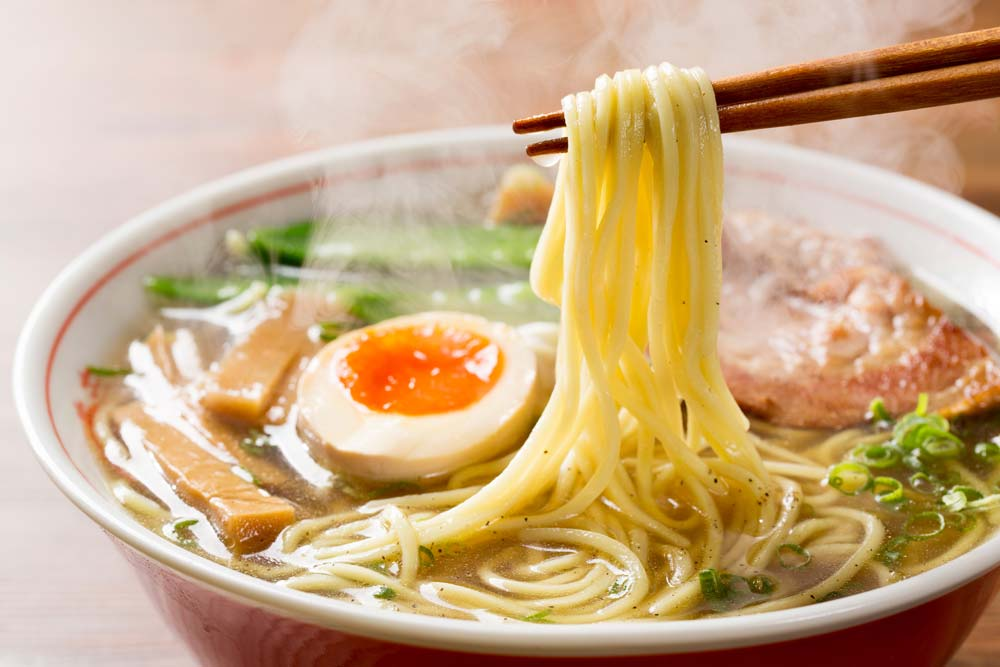

Japanese Ramen
A simple recipe with a lot of history

A little piece of history
The story goes that in 1665, in Japan, a dish of noodles served in the form of chinese soup was eaten.
It wasn't until after WW II that ramen began to catch on in Japan. Its beginnings were in the city of Hokkaido. This dish became very popliar and the word ramen became
very well known, everyone wanted to eat this soup.
At present it forms a valuable part of Japanese gastronomy; considering itself an authentically japanese product and basic in the diet of any mortal
Ingredients
- 1 leek (Only the green part)
- 1 small onion
- 4 slices of fresh ginger
- 1/2 carrot
- 4 garlic cloves
- 2 eggs
- 1 pork rib (can be another part)
- Rice noodles(may be others)
- 1 glass of soy sauce
- 1 tbsp. of sake (me: vodka)
- 3 tbsp. of mirin (me: sweet white wine)
- 2 tsp of sugar
- 1 green onion
- Salt
Ramen in 8 steps
- Separate the pork rib from the bone. Put the bone in a pot with water to boil. When it changes color, remove it and wash it with cold water.
- Place in a pot with water: the pork rib bone, the leek (reserve 1 of the leaves), 3 crushed garlic cloves, 3 slices of ginger, the onion and the carrot. Add salt. Boil 1 hour over low heat.
- Brown the pork rib (the boneless part) in a pan, on both sides. Once golden, add it to the pot and leave it for 10 minutes.
- Boil the 2 eggs in water with a splash of vinegar. Leave 6 minutes in total… no more than that! Cool and peel.
- Put the soy sauce, mirin, sugar and sake in a separate pot. Add the crushed garlic clove, the slice of ginger and the leek leaf that we had reserved. Cook over low heat and turn off when it boils.
- Marinate the pork and the whole and peeled eggs in this sauce. Minimum 1/2 hour.
- Cook the pasta as directed on the package.
Serve: place 3-4 tablespoons of the soy sauce from the marinade on the plate.
Add the portion of noodles in the center and broth of the soup until completing half the plate.
Put on one side the pork, cut into thin strips. In the other, an egg broken in half (the yolk should be almost runny).
Rain with the green onion cut very finely and in a chamfer. Why in chamfer? because it gives Japan, it is clear.
And you already know that Japanese cuisine is more than anything an aesthetic exercise.
HOME